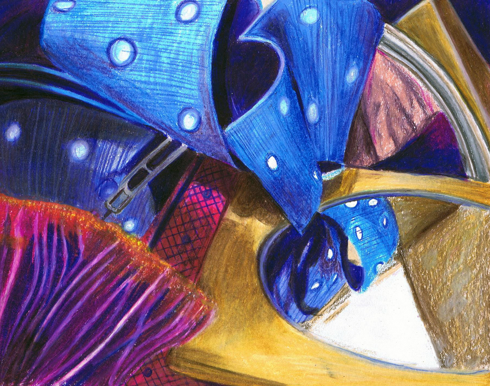

Doll
Media: Prismacolor, Pen

Pot
Media: Prismacolor

Bottles
Media: Prismacolor

Upside Down
Media: Prismacolor

Scream
Media: Pencil, Pen

Watercolor Bookmarks
Media: Watercolor, Sharpie

Masked
Media: Pencil, Charcoal

Tied
Media: Prismacolor

Mess
Media: Prismacolor

Gaze
Media: Pencil, Pen